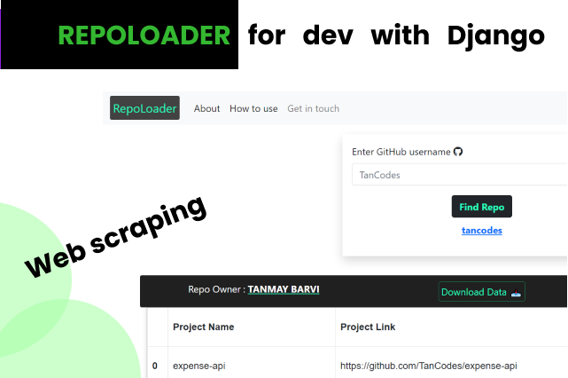

Repoloader with Django

RepoLoader is for the developers who are constantly visiting Github which will make their work a little bit easy. It will save the developers time to visit GitHub and search the username of the particular repo and changing tabs and all this stuff so We have made the work simpler. Just search the username and you will get only what the user want. Yeah, only Repos.
FEATURES
- It is Fast and Easy to use
- No need of any credentials.
- Users can also download the repo dataset in CSV, so they can use it for analysis, etc.
- NO need of opening GitHub and searching for the repos.
- Gives the name of the owner and the number of repositories is there in that.
- Shows only Repos name , with the last updated date and with the project links.
- Also shows the Main language used in the project with Forked repo or not.
- Shows the Pie chart for the most languages used by the user.
- Responsive website.
View the website LIVE
from django.shortcuts import render
from bs4 import BeautifulSoup
import pandas as pd
import requests
import datetime
"""
> HOME Page
"""
def home(request):
return render(request, "index.html")
"""
> Main function to get the repo data and shows to user
"""
def get_repo(request):
if request.method == "POST":
global USERNAME
USERNAME = request.POST["msg"]
if not USERNAME or '/' in USERNAME or '?' in USERNAME:
ERROR = "Invalid username"
return render(request, "index.html", {"ERROR": ERROR})
else:
base_url = "https://github.com"
url = f"{base_url}/{USERNAME}?tab=repositories"
# API DATA
link = f"https://api.github.com/users/{USERNAME}/repos?per_page=1000"
api_link = requests.get(link)
api_data = api_link.json()
get_url = requests.get(url)
# ^ ---- IF STATUS CODE IS 200 ----
if get_url.status_code == 200:
data = BeautifulSoup(get_url.text, "html.parser")
# name of the Repo owner
name_class = data.find_all(class_="p-name")
for tag in name_class:
NAME = tag.text.strip()
print("Name:", NAME)
# Total repo
repo_class = data.find(class_="Counter")
TOTAL_REPO = repo_class.text
print("Total repo:", TOTAL_REPO)
to_compare = int(TOTAL_REPO)
# IF REPO SIZE IS = 0 THAT MEANS IT IS AN EMPTY REPO
if to_compare == 0:
print("EMPTY")
empty_error = "This Repository is empty"
return render(request, "index.html", {"ERROR": empty_error})
else:
repos_name = []
repos_link = []
repos_language = []
repos_fork = []
repos_date = []
# Repo table
for items in api_data:
repos_name.append(items["name"])
item_link = items["svn_url"]
repos_link.append(item_link)
repos_language.append(items["language"])
final_language = [
"unknown" if i == None else i for i in repos_language
]
repos_fork.append(items["fork"])
final_fork = [
"✅" if i == True else "❌" if i == False else 0
for i in repos_fork
]
item_date = items["updated_at"][:10]
repos_date.append(item_date)
temp = list(
zip(
repos_name,
repos_link,
final_language,
final_fork,
repos_date,
)
)
# Number of is forked repo
is_forked_count = final_fork.count("✅")
df = pd.DataFrame(
temp,
columns=[
"Project Name",
"Project Link",
"Main Language",
f"Is Forked? ({is_forked_count})",
"Date",
],
) # Dataframe
global TABLE_REPO
TABLE_REPO = df.sort_values(
by="Date", ascending=False
).reset_index(
drop=True
) # Sort by dates
# TABLE_REPO_FINAL
TABLE_REPO_FINAL = TABLE_REPO.to_html(
index="false", header="true", table_id="table"
)
# Data dict
global all_data
all_data = {
"USERNAME": USERNAME,
"NAME": NAME,
"TOTAL_REPO": TOTAL_REPO,
"TABLE_REPO_FINAL": TABLE_REPO_FINAL,
}
# PIE CHART
counts = TABLE_REPO["Main Language"].value_counts()
language_names = list(counts.index)
language_values = counts.tolist()
print("language_names", language_names)
print("language_values", language_values)
# ALERT MESSAGE
global message
if to_compare > 100:
message = "Only displays the first 100 updated Repos"
print(message)
else:
message = ""
return render(
request,
"index.html",
{
"all_data": all_data,
"message": message,
"language_values": language_values,
"language_names": language_names,
},
)
# ! ----- ELSE SHOW THE ERROR ----
else:
print(get_url.status_code)
ERROR = f"Invalid username {USERNAME}"
return render(request, "index.html", {"ERROR": ERROR})
else:
return render(request, "index.html")
"""
# > Download to CSV
"""
def downloaded_to_csv(request):
if request.method == "POST":
# ^ save csv
suffix = datetime.datetime.now().strftime("%y%m%d_%H%M%S")
filename = "_".join([USERNAME, suffix])
save = TABLE_REPO.to_csv(f"{filename}.csv")
text_message = (
f"Dataset has been downloaded in your local device as {filename}.csv"
)
return render(
request,
"index.html",
{"all_data": all_data, "text_message": text_message, "message": message},
)
else:
return render(request, "index.html")